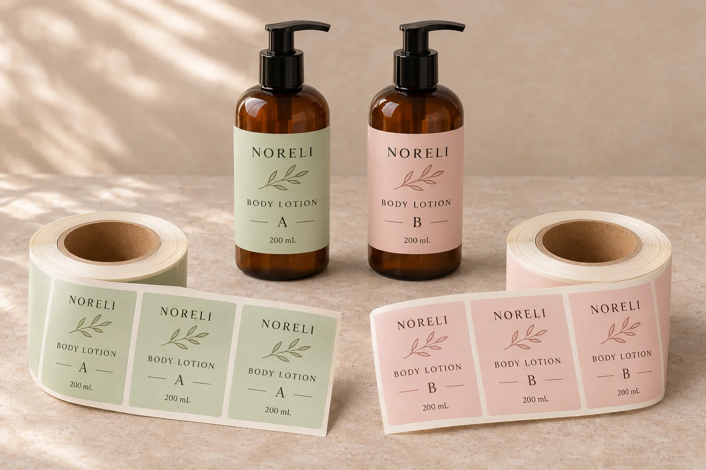
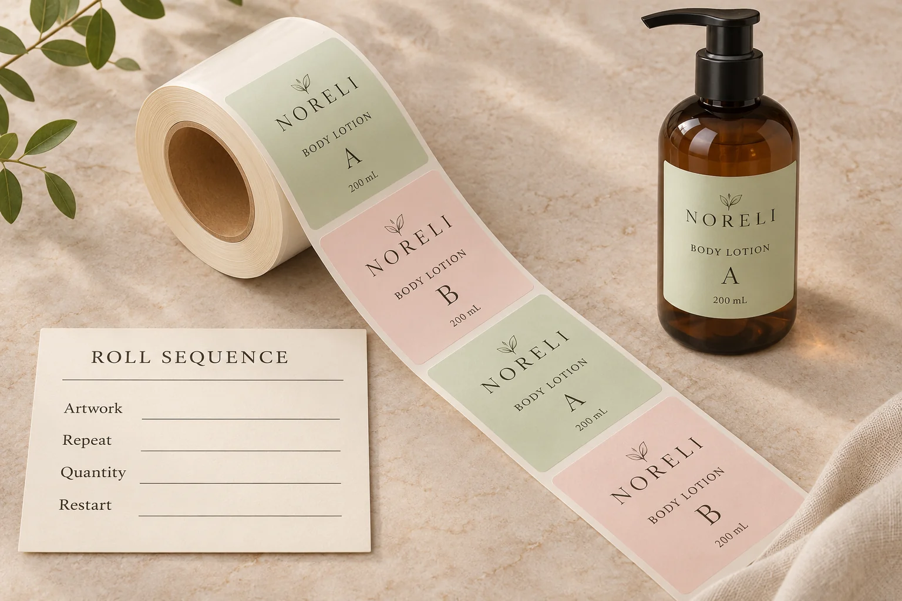

Several cosmetic label designs can share an order without arriving on the same roll. Ask for separate rolls by SKU when you need to label each product independently. Consider a repeating mixed-design roll only when the printer can supply the specified sequence and the receiving operator accepts it for the actual packing job. “Multiple designs” alone leaves that purchase unfinished.
I would settle the sequence before comparing the roll price. A lotion range might need the same material and dimensions for every version, yet use unequal quantities or change one variant halfway through the launch. The way those labels arrive can determine what the packing team can use next.

Separate the order, print run and supplied roll
A combined quotation can cover several fixed artwork files. A shared print run describes production planning. A supplied roll describes the physical sequence the recipient will handle. Confirmation of one does not establish the other two.
Provider descriptions show the distinction. Pixartprinting’s roll-label guidance says its multi-artwork designs arrive on separate rolls. Cor Label’s FAQ describes an alternating-design option on a single roll, including front and back labels. These are examples of those providers’ arrangements, not YT Labels offers or proof that every design combination is possible.
Write the requested delivery explicitly: separate rolls for each identified SKU, or a drawing of the required sequence. If the minimum-order question is still open, the multi-design quantity guide handles that separate decision. Combining the commercial order does not promise a particular web arrangement.
Choose around what the operator consumes together
Separate SKU rolls suit a job that runs one lotion version at a time, changes quantities independently or sends variants to different packing sites. Ask how each full and partial roll will be identified. There may be more roll handling or changeovers; obtain the packer’s actual assessment rather than assuming that effect is negligible.
A specified repeat may suit a supported operation that consistently consumes the designs in that order. Ask the printer and operator to review the actual arrangement, including how it starts and how the operation resumes after an interruption. An A–B illustration is not evidence that a particular machine can apply it.
Also distinguish two product variants from two components on one bottle. A front and a back may be consumed as a pair. An A lotion and a B lotion usually have separate finished-pack requirements. Calling both arrangements “two designs” hides which labels belong together. The co-packer roll checklist covers the machine dimensions and orientation once this supply choice is clear.
Check whether a repeat matches the required mix
Consider a hypothetical order needing 600 A labels and 400 B labels, with one label on each bottle. Five hundred complete A–B repeats contain 1,000 labels, but only 500 A labels. The total matches the requested total while the design allocation leaves A short by 100 and B above need by 100. This is arithmetic, not an assumed production allowance or a YT minimum.
Four hundred A–B repeats plus 200 A labels would match the requested design totals. It would also introduce a different section or separately supplied stock. Have the supplier describe that proposal and the operator explain whether its handling is acceptable. Do not silently turn a recurring sequence into an unspecified mixed roll.
Rerun the comparison if the product mix changes. Separate rolls may preserve useful flexibility when A demand increases while B remains unchanged. A recurring arrangement may remain suitable when the consumption ratio is settled and the acknowledged operation uses it as intended. No saving follows from the word “combined”; compare confirmed labels, converting, identification and application work for the same usable output.

Use one receiving-arrangement brief
Start with released artwork references and required labels per design. Give the following four-row brief to the printer and the person who will apply the labels. Leave unanswered fields open.
| Input | Agreement to record | Decision or hold |
|---|---|---|
| Artwork and demand | SKU/component, accepted file revision and required usable quantity of each design. | Does the proposed supply cover each design without relying on the combined total? |
| Consumption pattern | Separate product runs or a specified recurring sequence; actual application operation and owner. | Can that operation use the designs in the proposed order? |
| Roll map | Design allocation by identified roll; repeat or section boundaries where relevant; partial-roll identification. | Can receiving locate the correct stock and interpret the proposed arrangement? |
| Review and exceptions | Required representative review, start/restart handling, acknowledged changes and unresolved conditions. | Has the operator accepted the arrangement, or must supply be revised? |
- List the designs, revisions and quantities before requesting an arrangement.
- Ask the printer to return a roll allocation or sequence drawing against those exact inputs.
- Have the receiving operator review that proposal and identify any representative trial needed.
- Compare accepted proposals, then attach the chosen arrangement and remaining conditions to the order.
Hold the affected release if the response says only “mixed designs,” the allocation cannot satisfy a required SKU, or the operator has not accepted the proposed sequence. If supply changes, obtain a revised acknowledgment. An artwork proof approving A and B separately does not approve how they alternate.
Keep unexpected missing positions or joins separate from the planned arrangement. The missing-label web guide addresses exceptions to an expected sequence; it cannot decide which sequence to buy initially.
Ask for the arrangement your packing job needs
For cosmetic bottle and jar labels, provide the containers, label dimensions, artwork references and quantities by design. State whether each SKU runs independently or the operator requires a specified repeat. Ask which arrangement can be supplied and what review it needs.
The form prepares a message. Send artwork and the proposed roll drawing by email or WhatsApp.
Prepare a roll-arrangement inquiry